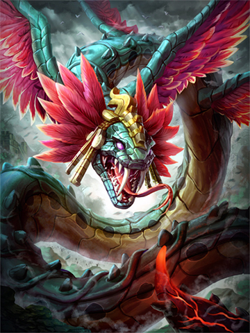

KUKULKAN
Serpent of the nine winds
Upon the high winds of Maya lands rides the feathered serpent, Kukulkan. Awesome and terrible to behold, majestic yet sinister, Kukulkan embodies the danger and beauty of a double-edged sword.Time has worn away knowledge of this God like the breeze over stone. Perhaps Kukulkan prefers this. He is known by many names and worn the face of man and beast - and worshipped with the kind of reverence born of fear.Dotted across the vast forests of the Maya lands stand great pyramids bearing his serpentine likeness, architecturally perfect so as to catch the light and bring to life those slithering stone statues. Painted in blood, sacrifices were made upon these sites to appease Kukulkan. He is the lord of death and rebirth.To the world, he brought the four elements, but of wind he keeps control. A great gem, worn about his sinuous neck is said to be the source of all air.To the people, he brought the calendar. That glorious, portentous stone disk, which counts time to a distant future, only to stop abruptly and with horrifying finality.To the battlefield, he brings a legacy of power and domination. Sacrifices made for his favor were measured in blood, but mortal blood is weak. It seems that, for Kukulkan's ultimate appeasement, the blood of a God is required.
1
Zephyr
Kukulkan fires a projectile breath attack that hits the first enemy in its path, doing damage and Slowing all enemies in the area around the impact.
Damage: 85/130/175/220/265 (+75% of your Magical Power)
Slow Duration: 3s
Slow: 20/25/30/35/40%

2
Slipsstream
Kukulkan channels the wind, allowing him to move faster. This speed boost is strong at first but scales down gradually over the 4s duration. Additionally, Kukulkan cleanses himself of slows and becomes immune to Slows for 0.6s when activated.
Speed: (60/65/70/75/80%)
Duration: 4s
3
Whirlwind
Kukulkan summons a tornado at his ground target location. A smaller tornado branches off onto any enemies that come within the radius, doing damage every .5s for 2.5s and is refreshed if enemies stay within the radius, for a maximum of 12 ticks.
Damage per Tick: 8/16/24/32/40 (+15% of your Magical Power)
Tornado Lifetime: 4s

4
Spirit of the nine winds
Kukulkan summons the Spirit Of The Nine Winds to breathe down destruction onto his enemies in a path in front of him, doing damage and knocking all of the enemies to the side.
Damage: 400/500/600/700/800 (+120% of your Magical Power)
PASSIVE
Power of The Wind Jewel
Increases Magical Power by 4% of maximum Mana.
ITEMS

Pendulm of Ages

Book of Toth
Tablet of Destinies

Staff of Myrddin

Envolved Charon's Coin
Soul Reaver
SKINS
Classic Ao Kuang
NORMAL
Golden
NORMAL
Sacred Dragon
NORMAL

Typhoon
NORMAL
Phoenix Fury
UNLIMITED
Winds of Change
UNLIMITED
Dragons Rage
LIMITED
Void Wyrm
LIMITED
Azure Skies
EXCLUSIVE
Bone Wraith
EXCLUSIVE
Breezy Chibi
EXCLUSIVE
Danger Noodle
EXCLUSIVE
Dragon Doggo
EXCLUSIVE
Kuku
EXCLUSIVE
Kuku Puffs
EXCLUSIVE
Kuku4
EXCLUSIVE
Polar Vortex
EXCLUSIVE
Quetzakukulkan
EXCLUSIVE
Sir Pentsworth IV Esq. Exclusive
EXCLUSIVE
Tornado Tech
EXCLUSIVE